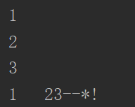

原文出处:本文由博客园博主纪宇-年华提供。
原文连接:https://www.cnblogs.com/jiyu-hlzy/p/11746966.html
原文连接:https://www.cnblogs.com/jiyu-hlzy/p/11746966.html
- if elif else的用法
- 三目运算符的用法
- while 和 for 两种循环
- break 和 continue 的用法
条件判断
if elif else
if 和 elif 后面填的判断语句，返回值为 bool 类型

三目运算符
结构：
为True时执行 if 判断语句 else 为False时执行
有这样一个判断，如果值大于3返回True，否则返回False
注意：三目运算符一般做简单的判断
while条件循环
while 判断语句：
循环体
改变变量
break 和 else
循环可以被终止：判断语句返回False、通过break终止循环
else的执行条件：只有在循环不是被 break 终止的情况下才会执行else中的内容
for迭代循环
for i in obj：
循环体
range(开始，结束，步长) ：创建一个整数列表，一般用在 for 循环中
continue：和break类似，但是continue不会终止循环，而是结束本次循环，跳到下次循环
输出不换行
end=''
print 语句输出的内容默认以换行符 \n 结尾
可以在后面添加一个参数end=''，用引号内的内容修改这个默认的换行符

九九乘法表